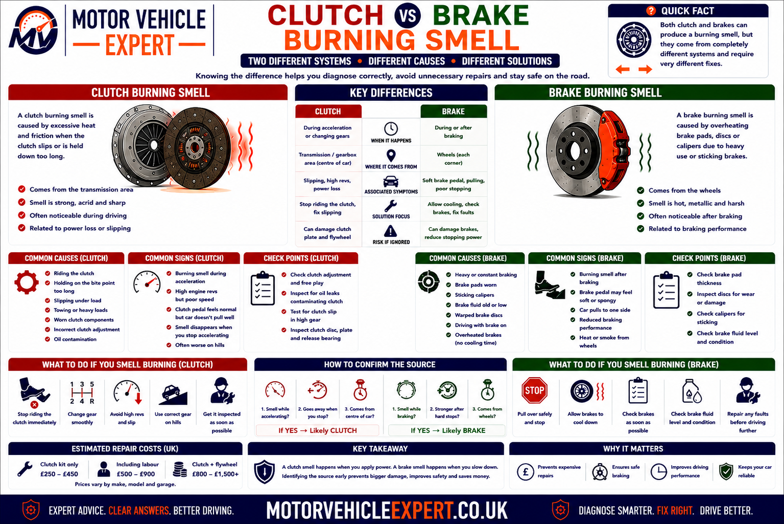
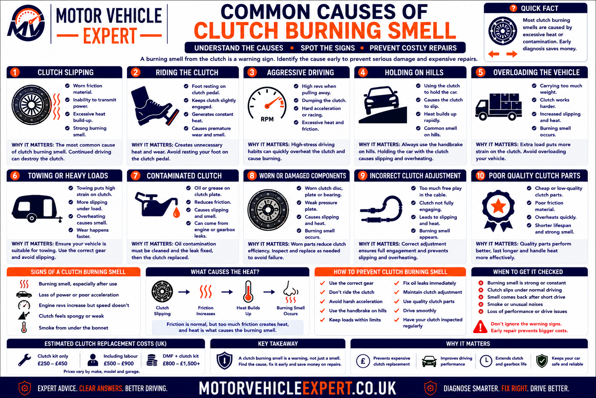
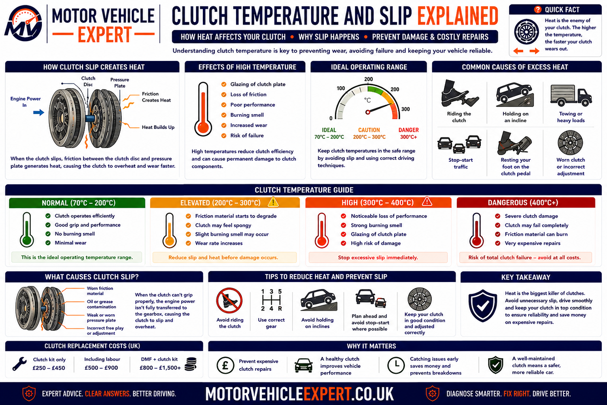
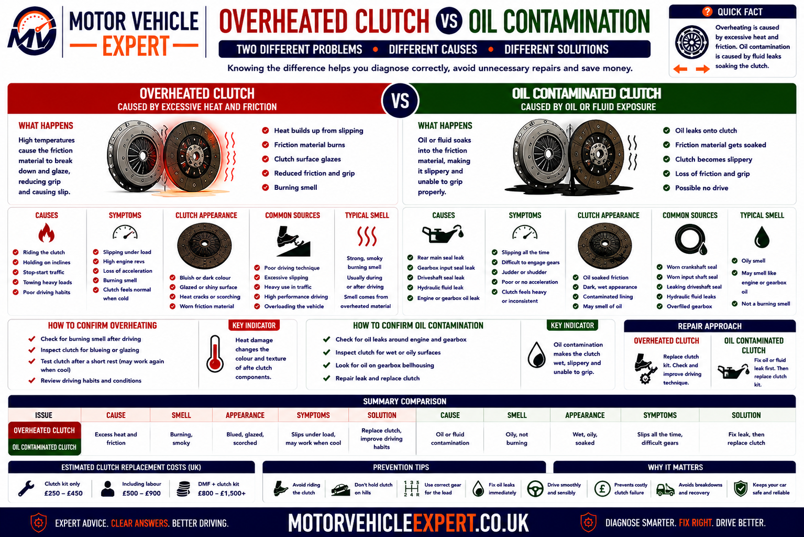
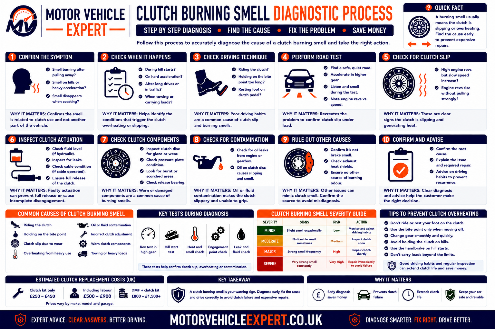
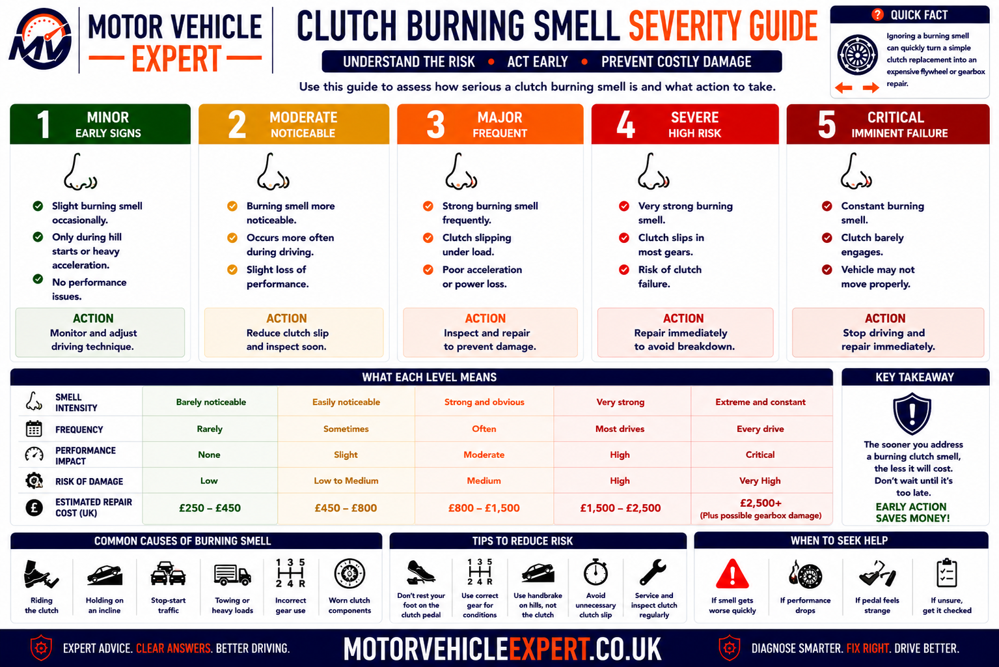
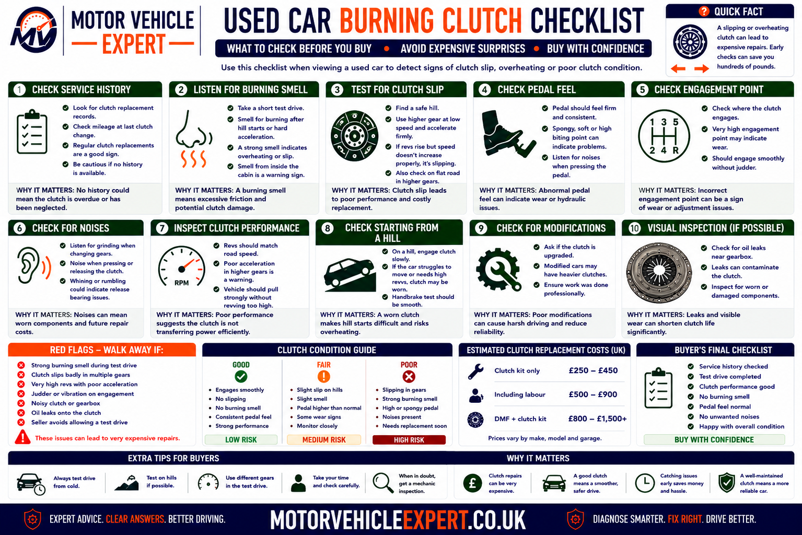
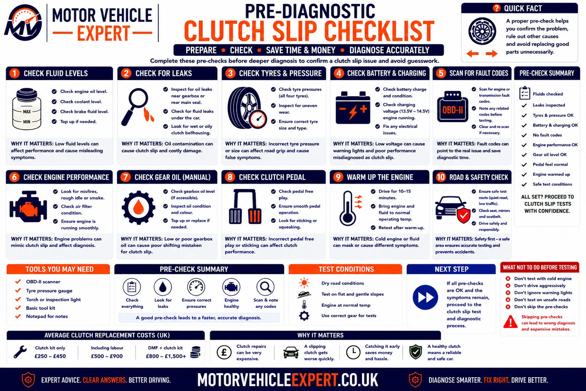

Use the Diagnostic App for a Burning Clutch Smell
A hot smell does not always come from the clutch. Overheated brakes, auxiliary belts, electrical wiring, oil leaks and exhaust contact can produce similar complaints. The Motor Vehicle Expert diagnostic app can help classify the smell and related symptoms before clutch or gearbox work is authorised.
1. Record When It Happens
Note whether the smell follows pull-away, hill starts, reversing, traffic, towing or hard acceleration.
2. Compare Revs and Speed
Check whether engine speed rises without matching vehicle acceleration.
3. Locate the Strongest Smell
Compare the engine and gearbox area with each wheel, the exhaust and the electrical system.
4. Judge the Driving Risk
Decide whether cooling, prompt diagnosis or immediate recovery is appropriate.
A smell that follows clutch engagement, rev flare or prolonged low-speed manoeuvring supports clutch heat. A smell strongest near one wheel after normal driving makes brake overheating more likely.
What Does a Burning Clutch Smell Mean?
A burning clutch smell normally means the clutch friction material has become excessively hot. Heat develops when the flywheel, friction plate and pressure plate continue moving at different speeds instead of locking together fully.
One smell after a difficult hill start, reversing manoeuvre or trailer movement may result from temporary overheating. Repeated smell during normal acceleration, especially with rev flare, poor acceleration, a high bite point or clutch judder, suggests a mechanical fault that requires diagnosis.
One Difficult Manoeuvre
Allow the clutch to cool and monitor it, provided there is no smoke, slipping or loss of drive.
Smell During Normal Driving
Repeated heat without unusual clutch use suggests wear, contamination or incomplete clutch engagement.
Smell With Rev Flare
Engine revs rising without matching road speed strongly supports clutch slip.
Smell With Smoke or Lost Drive
Stop immediately and arrange recovery because severe overheating or mechanical failure may be present.
Typical Evidence
- ✓ The smell followed one difficult manoeuvre.
- ✓ The clutch does not slip during normal acceleration.
- ✓ Pedal operation remains normal.
- ✓ The smell fades after cooling.
- ✓ No smoke or fluid leakage is present.
- ✓ The symptom does not return during ordinary driving.
Typical Evidence
- ! The smell repeatedly returns.
- ! Engine revs flare under acceleration.
- ! Road speed does not match engine speed.
- ! The bite point is high or inconsistent.
- ! Clutch judder or pedal-return problems are present.
- ! Oil or hydraulic fluid is leaking near the bellhousing.
Smell alone identifies excessive heat, not the exact cause. Confirm whether the heat came from driver use, clutch slip, contamination, weak pressure-plate clamping or a release system that remained partly applied.
Repeated acceleration, hill starts or deliberate slipping can glaze the friction material and damage the pressure plate and flywheel. One clear symptom is enough to stop testing and arrange diagnosis.
Is a Burning Clutch Smell Serious?
A burning clutch smell means excessive friction heat has been generated somewhere in the clutch system. The urgency depends on what caused the heat, whether the clutch still transfers drive correctly and whether the smell disappears after cooling or keeps returning during ordinary use.
One difficult manoeuvre may overheat an otherwise serviceable clutch temporarily. Repeated smell, engine rev flare, weak acceleration, clutch judder, abnormal pedal operation or fluid leakage indicates a mechanical problem that can deteriorate quickly.
One Brief Smell
Lower ConcernThe smell followed one difficult hill start or manoeuvre, faded after cooling and has not returned during normal driving.
Smell Returns Regularly
Moderate ConcernOrdinary traffic, reversing or acceleration repeatedly produces the smell without unusually demanding clutch use.
Smell With Clutch Slip
High ConcernEngine revs rise without matching road speed, especially in higher gears, uphill or under additional load.
Smoke or Loss of Drive
UrgentVisible smoke, severe rev flare, unreliable acceleration or inability to move indicates dangerous overheating or failure.
Lower-Risk Pattern
- ✓ The smell followed one identifiable difficult manoeuvre.
- ✓ Engine revs and road speed remain correctly linked.
- ✓ The clutch engages smoothly after cooling.
- ✓ No smoke or fluid leakage is visible.
- ✓ The pedal returns fully.
- ✓ The smell does not return in ordinary driving.
Higher-Risk Pattern
- ! The smell appears during gentle acceleration.
- ! Revs flare without matching road speed.
- ! The vehicle struggles uphill.
- ! Smoke appears from the bellhousing area.
- ! The clutch pedal sticks or returns slowly.
- ! Oil or hydraulic fluid leakage is present.
- ! Drive becomes intermittent or disappears.
Friction heat can glaze the clutch plate, weaken pressure-plate performance and mark the flywheel. A fault that begins only under heavy load may progress until ordinary acceleration causes severe slip.
What Does a Burnt Clutch Smell Like?
A burnt clutch often produces a sharp, acrid smell similar to overheated brakes, scorched paper, hot resin or burning electrical insulation. It may enter the cabin through ventilation openings or become strongest after the vehicle stops.
Smell descriptions are subjective, so the conditions that created the smell are more reliable than the description alone. Clutch heat is more likely after prolonged bite-point use, rev flare, hill starts, reversing or towing.
Sharp and Acrid
Heated friction material commonly produces a harsh smell that is noticeably different from fuel or coolant.
Similar to Hot Brakes
Brake pads and clutch friction material can produce similar smells because both generate heat through friction.
Scorched-Paper Character
Some drivers describe the smell as burnt paper, cardboard or hot resin.
Strongest After Stopping
Airflow while driving may disperse the smell before it becomes obvious around the parked vehicle.
May Enter Through the Vents
Heat and odour from the engine and gearbox area can be drawn into the cabin ventilation intake.
Can Linger Around the Bellhousing
Strong overheating may leave a smell around the gearbox area after the clutch itself has cooled.
Different From Coolant
Coolant normally has a sweeter smell and may be accompanied by steam, dampness or cooling-system warnings.
Different From Fuel
Petrol and diesel produce recognisable fuel odours and require urgent leak investigation.
Different From Burning Oil
Oil on a hot exhaust often creates visible smoke and an oily, heavy smell from the engine bay.
| Smell description | Possible source | Supporting evidence |
|---|---|---|
| Sharp friction smell after pull-away | Clutch overheating | Hill start, reversing or prolonged bite-point use |
| Friction smell near one wheel | Binding or overheated brake | Wheel heat, brake drag or vehicle pull |
| Hot rubber smell | Belt, hose or tyre contact | Squeal, rubbing marks or damaged rubber |
| Electrical or melting-plastic smell | Wiring, connector or electrical component | Smoke, heat damage, flickering or electrical failure |
| Heavy oily smell with smoke | Oil leaking onto a hot exhaust | Engine-bay oil residue and visible smoke |
| Sweet smell with steam | Coolant leak | Falling coolant level or overheating |
Clutch, brake, belt, electrical and oil-related smells can overlap. Use the location, driving event, temperature, warning lights and mechanical symptoms to identify the true source.
Burning Clutch Smell vs Overheated Brakes
Clutch and brake friction materials can smell similar when hot. The strongest smell location and the event immediately before the smell appeared provide the most useful initial separation.

Clutch heat normally follows clutch engagement or slip, while brake heat is more likely to remain concentrated at one wheel or axle.
Typical Evidence
- ✓ The smell followed a hill start or reversing manoeuvre.
- ✓ Engine revs rose without matching road speed.
- ✓ The smell is strongest near the engine and gearbox.
- ✓ The clutch bite point is high or inconsistent.
- ✓ Pull-away judder or clutch slip is present.
- ✓ Wheel temperatures remain broadly even.
Typical Evidence
- ✓ The smell is strongest near one wheel.
- ✓ One wheel is significantly hotter than the others.
- ✓ The vehicle pulls or feels held back.
- ✓ A brake caliper or parking brake is binding.
- ✓ Smoke appears from the wheel area.
- ✓ Clutch operation and rev response remain normal.
| Comparison point | Clutch overheating | Brake overheating |
|---|---|---|
| Typical trigger | Pull-away, hill start, reversing or clutch slip | Braking, seized caliper or parking-brake drag |
| Strongest smell location | Engine and gearbox area | One wheel or axle |
| Engine rev flare | May be present | Not caused directly by the brake fault |
| Vehicle resistance | Weak acceleration through lost torque | Vehicle may feel physically held back |
| Wheel temperature | Usually even | One wheel may be much hotter |
| Primary inspection | Clutch, release system, contamination and flywheel | Calipers, pads, discs, hoses and parking brake |
An overheated braking system can cause serious burns. Compare heat cautiously without touching components and arrange recovery if smoke, severe brake drag or reduced braking performance is present.
Other Burning Smells That Can Be Mistaken for a Clutch
A clutch is only one possible source of a hot or burning smell. The engine bay, brakes, tyres, exhaust and electrical system should be considered before major drivetrain work is authorised.
Binding Brake Caliper
A seized piston or slider can keep a brake pad pressed against the disc and create intense local heat.
Parking Brake Drag
A sticking cable, lever or electronic actuator can overheat a rear brake.
Oil on the Exhaust
Engine or gearbox oil contacting a hot exhaust can create smoke and a heavy burnt-oil smell.
Auxiliary Belt Slip
A slipping belt may produce hot-rubber smell, squealing and charging or cooling faults.
Electrical Wiring Fault
Overloaded wiring, poor connections or short circuits can create melting-plastic smell and fire risk.
Starter Motor Overheating
Prolonged cranking or a starter that remains engaged can create heat and electrical smell.
Tyre Rubbing
A tyre contacting bodywork or suspension can produce hot-rubber smell and visible scuffing.
Plastic on the Exhaust
Road debris, undertray material or a loose component can melt against the exhaust.
Coolant Leak
Coolant contacting hot engine parts can produce steam and a distinctive sweet smell.
Exhaust Heat Shield Contact
Loose insulation or underbody material may heat up or rub against the exhaust.
Overheated Automatic Transmission
Internal clutch or fluid overheating can create a hot oil smell and transmission warnings.
DPF Regeneration Heat
Diesel particulate-filter regeneration can produce unusual heat and smell, but should not cause manual clutch rev flare.
Stop the vehicle safely and switch off the engine if smoke, melting-plastic smell, fuel odour or signs of fire are present. Do not continue driving merely because the clutch appears to operate normally.
Common Causes of a Burning Clutch Smell
Clutch heat can result from driver operation, ordinary component wear, contamination or a fault that prevents full clutch engagement. The smell identifies friction heat but not which of these causes created it.

A repeated smell during ordinary driving is more concerning than a single smell after one unusually demanding manoeuvre.
Clutch Slip Under Acceleration
Lost torque becomes heat as the engine flywheel rotates faster than the clutch plate.
Riding the Clutch Pedal
Resting a foot on the pedal can reduce clamping force and keep the release bearing loaded.
Holding on the Bite Point
Using the clutch to hold the vehicle stationary creates continuous friction.
Difficult Hill Starts
High torque and prolonged engagement generate substantial friction heat.
Slow Reversing
Parking and trailer manoeuvres can keep the clutch partially engaged for extended periods.
Stop-Start Traffic
Repeated pull-away and creeping can create heat when clutch use is excessive.
Towing and Heavy Loads
Additional mass raises the torque required during pull-away and hill climbing.
Worn Friction Plate
Reduced grip allows the clutch to slip under load and generate heat.
Weak Pressure Plate
Reduced spring force prevents the clutch surfaces clamping firmly together.
Oil Contamination
Engine oil, gearbox oil or hydraulic fluid reduces friction and creates slip or judder.
Hydraulic Pressure Not Releasing
A cylinder, hose or compensation-port fault can hold the clutch partly disengaged.
Incorrect Cable Adjustment
Insufficient free play can maintain release pressure on a cable-operated clutch.
Flywheel Heat Damage
Hot spots and distortion can reduce consistent friction and contribute to repeated overheating.
Incorrect Clutch Installation
Wrong parts, contamination, release preload or assembly errors can make a new clutch slip.
Engine Torque Increase
Remapping or performance modifications may exceed the standard clutch’s torque capacity.
Driver operation creates intentional partial engagement. Mechanical slip occurs even though the pedal is fully released and the clutch should be locked.
Why Does a Slipping Clutch Produce a Burning Smell?
Once the clutch pedal is released, the pressure plate should clamp the friction plate firmly against the flywheel. Engine speed and gearbox input speed should then remain mechanically linked.
If the available friction or clamping force is too low, the flywheel continues rotating faster than the clutch plate. The difference in speed creates heat at the friction surfaces and can produce a strong smell.
1. Engine Torque Increases
Acceleration, hills or additional load raise the torque the clutch must transfer.
2. Friction Capacity Is Exceeded
Wear, oil or weak pressure-plate force prevents full grip.
3. Engine Revs Flare
The engine speeds up faster than the gearbox and road wheels.
4. Lost Torque Becomes Heat
Relative movement overheats the friction plate, pressure plate and flywheel.
Supporting Evidence
- ✓ Revs rise without matching road speed.
- ✓ The fault is worse in higher gears.
- ✓ Hills and towing increase the symptom.
- ✓ The bite point is high.
- ✓ Reducing throttle helps the clutch grip again.
- ✓ A burning smell follows acceleration.
Supporting Evidence
- ✓ The smell followed prolonged partial engagement.
- ✓ Revs and road speed remain linked afterwards.
- ✓ The clutch does not slip in higher gears.
- ✓ Pedal operation remains normal.
- ✓ The smell fades after cooling.
- ✓ The symptom does not return with correct use.
A brief clear rev flare is sufficient evidence to stop testing. Repeating the fault can turn early friction wear into severe pressure-plate and flywheel damage.
Can Riding the Clutch Cause a Burning Smell?
Yes. Riding the clutch means keeping unnecessary pressure on the pedal while the vehicle is moving or stationary. Even small pedal pressure can keep the release bearing loaded and reduce the force clamping the clutch plate.
Foot Resting on the Pedal
Light continuous pressure may keep the release mechanism partly applied.
Creeping in Traffic
Holding the clutch at the bite point to move slowly creates prolonged friction.
Holding on a Hill
Using the clutch instead of the parking brake generates continuous heat.
Resting at Traffic Lights in Gear
Keeping the pedal depressed loads the release bearing for longer than necessary.
Partly Releasing During Gear Changes
Slow or incomplete pedal release can extend the slipping phase.
Excessive Revs During Pull-Away
High engine speed while the clutch is partially engaged raises heat generation.
Reduce Heat and Wear
- ✓ Remove your foot from the pedal after changing gear.
- ✓ Use the parking brake on gradients.
- ✓ Select neutral during longer stationary waits.
- ✓ Move away with appropriate rather than excessive revs.
- ✓ Avoid continuous creeping where possible.
- ✓ Complete gear changes smoothly and promptly.
When Technique Is Not the Whole Cause
- ! The smell returns with correct pedal use.
- ! Revs flare with the pedal fully released.
- ! The bite point has changed significantly.
- ! The clutch judders during normal engagement.
- ! Pedal return is slow or incomplete.
- ! Oil leakage is visible near the bellhousing.
Improved pedal use cannot restore glazed friction material, pressure-plate force, contaminated surfaces or a damaged flywheel.
Why Does the Clutch Smell After a Hill Start?
A hill start requires the clutch to transfer enough torque to move the vehicle against gravity while preventing rollback. The clutch may remain partially engaged longer than during a level-road pull-away.
High Engine Speed
Excess revs increase the speed difference across the clutch while it is engaging.
Prolonged Bite-Point Use
Holding partial engagement increases friction duration.
Vehicle Rollback
Repeated attempts may require several high-load engagement cycles.
Heavy Vehicle Load
Passengers, luggage and trailers increase the torque required.
Worn Clutch
Reduced friction capacity allows slip under the added gradient load.
Weak Pressure Plate
Insufficient clamping force becomes more obvious during a demanding hill start.
Hold the vehicle with the brake, establish the clutch bite point briefly and release the brake as drive takes up. Do not balance the vehicle on the clutch.
A healthy clutch should manage normal gradients when operated correctly. Recurring heat suggests wear, contamination, clamping-force loss or a release fault.
Why Does the Clutch Smell When Reversing?
Reversing often requires very low vehicle speed and precise control. Drivers may keep the clutch partly engaged while parking, reversing uphill or positioning a trailer, creating significant heat even over a short distance.
Parking Manoeuvres
Repeated changes between stopping and creeping extend the clutch’s slipping phase.
Reversing Uphill
Gradient and low speed combine to produce a demanding clutch condition.
Trailer Manoeuvring
Combined vehicle weight and precise movement create high torque at very low speed.
High Reversing Gear Ratio
Some vehicles require more clutch modulation than expected to maintain a controlled pace.
Limited Rear Visibility
Frequent stops and corrections can increase the number of clutch engagement cycles.
Worn or Marginal Clutch
An already weak clutch reaches excessive temperature more quickly.
| Reversing pattern | Likely interpretation | Recommended response |
|---|---|---|
| Smell after one prolonged parking manoeuvre | Temporary clutch overheating possible | Allow cooling and avoid repeating the technique |
| Smell after every normal reverse movement | Clutch weakness or release fault possible | Arrange diagnosis |
| Smell with strong reverse judder | Clutch, flywheel or contamination fault possible | Inspect the complete friction system |
| Revs flare but vehicle barely moves | Severe clutch slip | Stop and arrange recovery |
| Smell during trailer reversing | High load and prolonged slip | Stop, cool and repair any existing clutch weakness |
Continuing to reverse a trailer or climb a gradient can rapidly glaze the clutch and damage the flywheel.
Why Does the Clutch Smell in Stop-Start Traffic?
Congested traffic creates many clutch engagement cycles in a short period. Continuous creeping, holding the vehicle at the bite point or resting a foot on the pedal can generate more heat than normal pull-away and gear-change operation.
Continuous Creeping
The clutch may remain partially engaged for long periods rather than locking fully.
Repeated Pull-Away
Every stop and start creates another controlled friction cycle.
Foot Resting on the Pedal
Unnecessary pedal pressure can reduce full clutch engagement.
Holding on Gradients
Traffic on an incline encourages damaging bite-point use.
Insufficient Cooling Time
Repeated engagement can add heat faster than the clutch can release it.
Existing Clutch Wear
A marginal clutch may begin slipping once traffic temperature rises.
Reduce Clutch Heat
- ✓ Leave enough space to move in complete short stages.
- ✓ Fully engage the clutch where possible.
- ✓ Select neutral during longer waits.
- ✓ Use the brake to control stationary position.
- ✓ Remove your foot from the clutch pedal.
- ✓ Avoid excessive engine speed during pull-away.
Arrange Inspection If...
- ! Ordinary traffic repeatedly produces a strong smell.
- ! Slip remains after leaving the traffic.
- ! The bite point changes as the clutch heats.
- ! Pedal return becomes slow.
- ! Pull-away judder develops.
- ! The clutch has low mileage after replacement.
If the bite point rises and slip develops only after repeated pedal use, the hydraulic system may be retaining pressure and preventing full clutch engagement.
Can Towing Cause a Burning Clutch Smell?
Yes. Towing increases the total mass the clutch must move and raises torque demand during pull-away, reversing, hill climbing and low-speed manoeuvring.
A healthy clutch may become hot after prolonged trailer manoeuvring, while a worn clutch may begin slipping during normal towing acceleration.
Trailer Pull-Away
Moving the combined weight from rest requires additional clutch torque.
Reversing a Trailer
Precise low-speed movement commonly extends partial clutch engagement.
Uphill Towing
Gradient and trailer mass create an especially demanding load.
Starting on Wet Grass
Repeated attempts and wheelspin can lead to unnecessary clutch slipping.
Overloaded Trailer
Excess mass increases clutch, brake, tyre and suspension loads.
Incorrect Gear Selection
Pulling in too high a gear increases clutch work and engine load.
Worn Clutch
Remaining friction capacity may be adequate when unladen but insufficient when towing.
Engine Remapping
Increased torque can overload the original clutch during towing.
Frequent Caravan Use
Regular heavy pull-away and manoeuvring can accelerate clutch wear.
The additional load can cause rapid overheating, complete loss of drive and inability to move the vehicle-trailer combination from a dangerous location.
How Clutch Temperature and Slip Create a Burning Smell
A clutch generates some heat every time it moves from disengaged to fully engaged. This is normal because the friction plate must briefly match the different speeds of the engine flywheel and gearbox input shaft.
Excess heat develops when the slipping phase lasts too long, occurs too frequently or continues after the pedal should have been fully released. Temperature can then alter friction performance and accelerate permanent damage.

Cooling may restore temporary grip, but it cannot reverse glazing, wear, contamination or heat damage.
1. Speed Difference Exists
The engine flywheel and gearbox input shaft initially rotate at different speeds.
2. Friction Matches the Speeds
Controlled slip transfers torque and brings the components towards the same speed.
3. Full Clamping Should Occur
The pressure plate locks the clutch once the pedal is released.
4. Excess Slip Continues
Wear, contamination, low clamping force or driver use prevents full lock-up.
5. Temperature Rises
Lost torque is converted into friction heat.
6. Friction Performance Changes
Hot surfaces may grip less consistently and slip more easily.
7. Permanent Damage Develops
Glazing, cracking, distortion and flywheel hot spots can form.
8. Slip Becomes Easier to Trigger
The damaged clutch may begin overheating during lighter loads.
Normal Brief Heat
Produced during ordinary pull-away and gear changes, then released through the clutch and flywheel mass.
Repeated Heat Build-Up
Stop-start traffic and manoeuvring may add heat before the previous cycle has dissipated.
High-Load Heat
Hills, towing and heavy acceleration generate more energy when slip occurs.
Glazed Friction Material
Excess heat can harden and polish the clutch lining, reducing predictable grip.
Pressure-Plate Heat Damage
The friction surface may distort, crack or lose even clamping performance.
Flywheel Hot Spots
Localised overheating can create hard areas and future clutch judder.
Release-Bearing Heat
Riding the pedal can keep the bearing loaded and shorten its service life.
Oil Contamination and Heat
Contaminated surfaces may slip at lower torque and create heat during ordinary driving.
Temporary Recovery After Cooling
Grip may improve when temperature falls, although the underlying wear or damage remains.
| Heat pattern | Likely condition | Recommended response |
|---|---|---|
| One mild smell after an unusually difficult manoeuvre | Temporary overheating possible | Stop, cool and monitor |
| Smell after ordinary pull-away | Reduced clutch capacity or release fault | Arrange prompt diagnosis |
| Smell and slip improve after cooling | Heat-sensitive wear or contamination | Do not treat temporary improvement as a repair |
| Smell with severe rev flare | Significant clutch slip | Avoid driving and organise repair |
| Smoke or complete loss of drive | Severe overheating or mechanical failure | Stop and recover the vehicle |
A clutch that works again after cooling can still be worn, glazed, contaminated or held partly released. Recurring heat requires professional diagnosis.
Can a Worn Clutch Cause a Burning Smell?
Yes. As clutch friction material wears, the assembly loses some of its ability to transfer engine torque without slipping. The clutch may still operate normally during gentle driving but begin slipping when accelerating uphill, using a higher gear, towing or carrying additional weight.
Once slip begins, the flywheel rotates faster than the clutch plate and gearbox input shaft. The resulting friction converts engine torque into heat and can produce a strong burning smell.
Gradual Symptom Development
Wear-related slip often begins occasionally under heavy load before becoming noticeable during ordinary acceleration.
Higher-Gear Rev Flare
Fourth-, fifth- or sixth-gear acceleration may expose reduced clutch capacity before lower gears do.
High Bite Point
Some worn clutches begin engaging near the top of pedal travel, although bite-point position varies by design.
Weak Uphill Acceleration
Increased gradient load causes the clutch to slip and generate heat.
Reduced Towing Ability
A worn clutch may cope when the vehicle is unladen but lose grip with a trailer attached.
Smell After Acceleration
Friction heat may become noticeable after the vehicle stops or when airflow carries the smell into the cabin.
Worse When Hot
Grip may deteriorate further as repeated slipping raises the temperature.
Glazed Friction Surface
Repeated overheating can harden and polish the lining, making future slip easier to trigger.
Eventually Loses Drive
Severe wear may leave the vehicle unable to climb, accelerate or move reliably.
Typical Supporting Evidence
- ✓ Symptoms developed gradually.
- ✓ The clutch has covered substantial mileage.
- ✓ Higher gears exposed the fault first.
- ✓ The bite point has risen progressively.
- ✓ Hills and additional load cause rev flare.
- ✓ No obvious bellhousing oil leak is present.
Investigate Further If...
- ! The smell began suddenly.
- ! The clutch has recently been replaced.
- ! The pedal does not return fully.
- ! Oil is visible near the bellhousing.
- ! Strong judder accompanies the smell.
- ! The engine has recently been remapped.
Where friction wear is confirmed, a suitable clutch kit normally includes the friction plate, pressure plate and release bearing or applicable release component. The flywheel and oil seals must also be assessed while the gearbox is removed.
Can a Weak Pressure Plate Overheat the Clutch?
Yes. The pressure plate must clamp the friction plate firmly against the flywheel whenever the clutch pedal is released. Weak diaphragm springs, heat distortion, surface damage or incorrect installation can reduce clamping force and allow continued slip.
Weak Diaphragm Spring
Fatigue and repeated heat cycles can reduce pressure-plate clamping force.
Distorted Pressure Plate
Uneven contact prevents the complete friction plate from gripping consistently.
Heat-Cracked Surface
Severe overheating can crack or harden the pressure-plate friction face.
Uneven Diaphragm Fingers
Release-bearing wear or incorrect installation can damage the spring fingers.
Release-Bearing Preload
Continuous release pressure can reduce full clamping even though the pedal appears released.
Incorrect Pressure Plate
A component with insufficient torque capacity may slip under normal engine load.
Incorrect Bolt Tightening
Uneven tightening or incorrect torque can distort the assembly.
Self-Adjusting Clutch Error
Incorrect resetting or installation can leave the pressure plate outside its intended operating position.
Contaminated Pressure Surface
Oil, grease or inappropriate cleaning products reduce friction between the components.
| Pressure-plate evidence | Likely effect | Repair direction |
|---|---|---|
| Friction plate remains thick but clutch slipped | Clamping force may have been inadequate | Inspect pressure plate and release preload |
| Uneven contact marks | Distortion or flywheel runout possible | Replace damaged parts and assess flywheel flatness |
| Severe heat discolouration | Prolonged slip has overheated the assembly | Replace the clutch kit and inspect the flywheel |
| Uneven diaphragm-finger wear | Release bearing or alignment fault | Inspect the complete release mechanism |
| New clutch smells and slips immediately | Installation or component mismatch possible | Return to the installer for inspection |
Pedal effort is influenced by hydraulic leverage, cable routing, release-bearing design and diaphragm geometry. A light or heavy pedal does not directly measure clutch clamping force.
Can Oil Contamination Cause a Burning Clutch Smell?
Yes. A conventional manual clutch operates dry. Engine oil, gearbox oil, hydraulic fluid or excessive assembly grease can reduce friction, causing the clutch to slip, judder and overheat during ordinary driving.
The fluid source must be identified accurately. Replacing only the clutch while leaving a leaking seal or internal slave cylinder in place can contaminate the new components quickly.
Rear Crankshaft Seal
Engine oil can leak from the rear of the crankshaft into the bellhousing and spread across the flywheel.
Gearbox Input-Shaft Seal
Gearbox oil can travel along the input shaft towards the clutch plate and hub.
Concentric Slave-Cylinder Leak
Hydraulic fluid can escape from an internal release unit and contaminate the clutch.
Excess Assembly Grease
Too much grease on the input shaft may be thrown onto friction surfaces as the assembly rotates.
Contaminated Handling
Oil or unsuitable products transferred during installation can reduce initial grip.
Leak Worsens When Hot
Oil may flow more readily as it thins and components expand.
Intermittent Clutch Slip
Uneven contamination can create changing grip as the clutch rotates.
Pull-Away Judder
Patchy oil distribution can make the friction surface alternate between gripping and slipping.
Bellhousing Leakage
Fluid at the bellhousing joint supports contamination diagnosis but does not identify its source alone.
Possible Evidence
- ✓ Engine-oil level falls over time.
- ✓ Oil is present behind the flywheel.
- ✓ Fluid colour and smell match engine oil.
- ✓ The rear crankshaft area is wet.
- ✓ Gearbox-oil level remains stable.
Possible Evidence
- ✓ Gearbox or clutch-fluid level falls.
- ✓ Fluid follows the input shaft or slave cylinder.
- ✓ Contamination is strongest on the gearbox side.
- ✓ Pedal operation changes.
- ✓ The rear crankshaft area remains dry.
Cleaning does not reliably restore friction material that has absorbed oil or hydraulic fluid. Repair the leak, replace contaminated clutch components and assess the flywheel.
Overheated Clutch vs Oil-Contaminated Clutch
Both faults can produce burning smells, slip, judder and poor acceleration. The operating history, fluid leakage and removed component condition help establish whether the clutch was damaged by dry friction heat or contamination.

Overheating often follows prolonged slip or difficult clutch use, while contamination requires a fluid source inside the bellhousing.
Typical Evidence
- ✓ The smell followed hills, traffic or manoeuvring.
- ✓ No oil leak is visible.
- ✓ Friction material appears dry and glazed.
- ✓ Pressure plate and flywheel show heat marks.
- ✓ The fault becomes worse after repeated slipping.
- ✓ The clutch may improve temporarily after cooling.
Typical Evidence
- ✓ Fluid is visible around the bellhousing.
- ✓ Engine, gearbox or clutch-fluid level falls.
- ✓ Friction material appears oily or stained.
- ✓ Engagement includes inconsistent judder.
- ✓ Slip appeared relatively suddenly.
- ✓ Cooling does not remove the underlying symptom.
| Comparison point | Overheated dry clutch | Contaminated clutch |
|---|---|---|
| Typical trigger | Prolonged or repeated friction | Seal or hydraulic leakage |
| Surface appearance | Dry, glazed and heat-discoloured | Oily, wet or stained |
| Bellhousing leakage | Usually absent | May be visible |
| Judder | Possible after glazing or distortion | Common where fluid spreads unevenly |
| Cooling effect | May temporarily improve grip | Does not remove contamination |
| Complete repair | Replace damaged clutch and assess flywheel | Repair leak, replace clutch and assess flywheel |
Photographs of the friction material, pressure plate, flywheel and fluid traces can demonstrate whether the fault came from ordinary overheating, contamination or both.
Can a Burning Clutch Damage the Flywheel?
Yes. The flywheel absorbs heat from clutch engagement and provides one of the friction surfaces clamping the clutch plate. Prolonged slip can create localised hot spots, cracking, scoring and distortion.
Heat Discolouration
Blue, purple or dark areas indicate that the flywheel has experienced substantial temperature.
Hard Hot Spots
Localised hardened areas can change friction and create future judder.
Surface Cracking
Fine heat cracks may develop after severe or repeated overheating.
Flywheel Distortion
An uneven surface prevents consistent contact across the clutch plate.
Heavy Scoring
Worn friction material, rivets or debris can damage the flywheel face.
Dual-Mass Grease Damage
Excessive heat can degrade internal grease and damping components.
Excess Dual-Mass Movement
Internal spring and bearing wear may accompany clutch overheating.
Pull-Away Judder
Uneven flywheel friction can make a replacement clutch engage poorly.
Repeat Clutch Failure
Reusing a damaged flywheel can shorten the life of the new clutch kit.
| Flywheel finding | Possible action | Important limitation |
|---|---|---|
| Minor marks within specification | May be reusable | Follow manufacturer or clutch-supplier limits |
| Approved solid flywheel with suitable wear | Machining may be possible | Correct finish and step height must be retained |
| Severe cracks or distortion | Replace flywheel | Do not machine beyond dimensional limits |
| Dual-mass movement outside specification | Replace dual-mass flywheel | Movement limits vary by component |
| Grease leakage or internal damage | Replace dual-mass flywheel | Do not reuse to reduce the immediate bill |
A surface can appear smooth while still being distorted or heat-damaged. Dual-mass rotational movement, rocking movement and friction condition must be compared with the correct limits.
Can a Hydraulic Fault Cause Clutch Overheating?
Yes. Most clutch hydraulic faults cause difficulty disengaging the clutch, but a system that traps pressure can prevent the pressure plate from clamping fully after the pedal is released.
Master Cylinder Not Returning
Internal seal, piston or compensation-port faults can maintain hydraulic pressure.
Slave Cylinder Sticking
Mechanical binding can keep the release mechanism partly operated.
Concentric Slave-Cylinder Fault
An internal cylinder may stick, leak or contaminate the clutch inside the bellhousing.
Restricted Flexible Hose
A damaged hose may allow pressure to apply but prevent rapid fluid return.
Blocked Compensation Port
Fluid expansion can maintain release pressure as temperature rises.
Incorrect Pushrod Adjustment
Insufficient free play may prevent the master cylinder reaching its rest position.
Pedal Pivot Binding
A stiff or damaged pedal mechanism can prevent full hydraulic return.
Heat-Related Pressure Build-Up
Bite-point position may change and slip may worsen after repeated pedal use.
Incorrect Hydraulic Fluid
Wrong fluid can damage seals and affect cylinder operation.
Supporting Evidence
- ✓ Pedal return is slow or incomplete.
- ✓ The bite point changes after repeated pedal use.
- ✓ Slip and smell worsen as the system heats.
- ✓ Residual hydraulic pressure is measured.
- ✓ Cylinder or pipe leakage is present.
- ✓ The clutch has relatively low mileage.
Supporting Evidence
- ✓ Pedal operation remains normal.
- ✓ No residual hydraulic pressure is present.
- ✓ Slip developed gradually with mileage.
- ✓ Higher gears exposed the fault first.
- ✓ The bite point rose progressively.
- ✓ Clutch history supports ordinary end-of-life wear.
Pedal movement, master-cylinder return, hose restriction and residual pressure can be investigated externally. This helps prevent a serviceable clutch being replaced while the actual hydraulic fault remains.
Can Incorrect Clutch-Cable Adjustment Cause a Burning Smell?
Yes. On cable-operated systems, insufficient free play can keep tension on the release mechanism and prevent the clutch from clamping fully. The resulting slip creates heat even when the driver’s foot is completely off the pedal.
Insufficient Free Play
Continuous cable tension can hold the release bearing against the pressure plate.
Incorrect Manual Adjustment
Over-adjustment may create a high bite point and reduce full clutch engagement.
Failed Automatic Adjuster
A ratchet or quadrant fault may hold excessive cable tension.
Seized Clutch Cable
Internal corrosion can prevent the release system returning completely.
Incorrect Cable Routing
Tight bends, heat exposure or contact with other components can restrict movement.
Damaged Pedal Quadrant
Wear or cracking can alter cable travel and clutch free play.
Release Fork Binding
A worn pivot or seized fork can keep slight pressure on the diaphragm spring.
Incorrect Replacement Cable
Wrong length or fittings can leave the system outside its adjustment range.
Bulkhead or Bracket Movement
Damaged mountings can alter effective cable travel and pedal operation.
Adjustment should restore the manufacturer’s specified free play, not move the bite point to hide worn friction material. Incorrect adjustment can create clutch slip or prevent full disengagement.
Why Does a New Clutch Produce a Burning Smell?
A slight temporary smell may occur when a newly repaired vehicle first heats up, but a correctly specified and installed clutch should not repeatedly smell, slip or overheat during normal use.
Persistent smell after replacement requires the installation, flywheel, seals, hydraulic system, cable adjustment and component specification to be checked before further damage develops.
Protective Residue Heating
Small external manufacturing or cleaning residues may produce a brief smell without clutch slip.
Incorrect Bedding Use
Excessive slipping or hard launches immediately after repair can overheat new surfaces.
Wrong Clutch Kit
The fitted components may not match the engine, gearbox, flywheel or torque specification.
Incorrect Plate Orientation
A friction plate fitted backwards can interfere with the flywheel or release system.
Self-Adjusting Clutch Error
Incorrect resetting or installation can reduce available clamping force.
Flywheel Not Replaced or Assessed
Existing heat spots, movement or distortion can damage the new clutch.
Oil Leak Left Unrepaired
A rear crankshaft or input-shaft seal can contaminate the new friction material.
Excess Input-Shaft Grease
Excess lubricant can be thrown onto the friction plate.
Release-System Preload
Hydraulic pressure or cable adjustment may prevent full clutch engagement.
Incorrect Pressure-Plate Tightening
Uneven bolt tightening can distort the pressure plate.
Engine Torque Exceeds Rating
A remapped or modified engine may overpower the standard clutch kit.
Damaged Release Bearing or Slave Cylinder
Reused or incorrectly fitted release components can prevent correct clamping.
| Post-repair symptom | Possible explanation | Required response |
|---|---|---|
| Very slight smell on first journey only | External residue heating may be possible | Monitor closely for any recurrence or slip |
| Smell returns during ordinary pull-away | Excessive slip or installation fault | Return to the installer promptly |
| Revs flare after replacement | Clamping, contamination or part mismatch | Stop load testing and preserve warranty evidence |
| Smell with strong judder | Flywheel, contamination or assembly fault | Arrange immediate inspection |
| Pedal sticks after replacement | Hydraulic or release-system fault | Do not continue driving until checked |
| Clutch slips after engine remapping | Torque exceeds clutch capacity | Confirm engine torque and component rating |
Continued use can damage new parts and make it harder to establish the original installation fault. Record the conditions and return the vehicle to the repairer.
Clutch Burning-Smell Diagnostic Process
Diagnosis begins by proving where the heat originated and what happened immediately before the smell appeared. Clutch, brake, belt, electrical, exhaust and fluid-leak sources must be separated before the gearbox is removed.

The process confirms the source before expensive clutch or gearbox dismantling and identifies the root cause that must be repaired.
1. Record the Driving Event
Establish whether the smell followed acceleration, a hill start, reversing, traffic, towing or braking.
2. Stop and Assess the Urgency
Check for smoke, fire risk, severe slip, brake failure or loss of drive before continuing.
3. Locate the Strongest Smell
Compare the bellhousing, individual wheels, engine bay, exhaust and electrical areas.
4. Inspect for Visible Heat Damage
Look for smoke, melted plastic, belt damage, fluid leakage and overheated brakes without touching hot components.
5. Compare Engine Revs and Road Speed
Confirm whether engine speed rises without matching vehicle acceleration.
6. Check Clutch Pedal Operation
Assess pedal return, free play, bite-point position, noise and consistency.
7. Inspect Hydraulic or Cable Control
Check for trapped pressure, cylinder leakage, hose restriction, incorrect cable free play and release-fork binding.
8. Inspect for Bellhousing Leakage
Identify engine oil, gearbox oil or hydraulic fluid that could contaminate the clutch.
9. Rule Out Brake Overheating
Check caliper movement, parking-brake release, wheel temperature and brake drag.
10. Rule Out Other Heat Sources
Inspect belts, wiring, exhaust contact, oil leaks, tyres and transmission warnings.
11. Remove and Inspect if Required
Assess friction wear, glazing, contamination, pressure-plate damage, release components and flywheel condition.
12. Correct the Root Cause
Repair leakage, adjustment, hydraulic pressure, driver-use issues, incorrect parts or flywheel damage.
13. Verify Pedal and Engagement
Confirm full pedal return, correct bite point and smooth clutch operation.
14. Complete a Controlled Road Test
Verify that engine revs and road speed remain correctly linked under suitable load.
15. Recheck for Heat and Leakage
Ensure no smell, smoke, brake drag or fluid leak returns after the repair.
16. Record the Final Findings
Document the failed components, root cause, parts fitted and flywheel decision.
| Diagnostic finding | Likely direction | Next action |
|---|---|---|
| Smell follows bite-point use and then fades | Temporary clutch overheating possible | Improve technique and monitor for recurrence |
| Revs flare and smell follows acceleration | Mechanical clutch slip likely | Inspect clutch, release system and flywheel |
| Pedal does not return fully | Hydraulic, cable or release fault possible | Test return movement before gearbox removal |
| Bellhousing fluid leakage is present | Clutch contamination possible | Identify and repair the exact fluid source |
| One wheel is significantly hotter | Brake drag more likely | Inspect caliper, hose and parking brake |
| Electrical smell and melting are present | Electrical overheating | Switch off and arrange immediate inspection |
| New clutch smells and slips | Installation, contamination or rating fault | Return to the installer and preserve evidence |
| Clutch and flywheel show severe heat damage | Expanded repair scope | Replace damaged components and correct the cause |
Repeated hill starts, handbrake tests or full-throttle acceleration create unnecessary heat and may turn a diagnosable fault into complete clutch and flywheel failure.
Friction wear, glazing, oil staining, pressure-plate heat, release-system condition and flywheel measurements should explain why the clutch overheated.
What a Mechanic Checks for a Burning Clutch Smell
A professional inspection should confirm the source of the smell before the clutch or gearbox is dismantled. The technician should reproduce only the minimum symptom necessary, inspect surrounding heat sources and identify whether the clutch overheated because of normal use, mechanical slip, contamination or incomplete engagement.
Driver Symptom History
Record whether the smell followed a hill start, reversing, traffic, towing, braking or acceleration.
Smell-Location Inspection
Compare the bellhousing and engine bay with individual wheels, the exhaust and electrical components.
Controlled Road Test
Compare engine speed with road speed under a brief safe load and stop immediately if clutch slip is confirmed.
Clutch Pedal Operation
Check pedal free play, return speed, smoothness, bite-point position and consistency.
Hydraulic System
Inspect fluid level, master cylinder, slave cylinder, hoses, compensation and retained pressure.
Mechanical Cable System
Check cable condition, routing, free play, adjustment, pedal quadrant and release-fork return where applicable.
Bellhousing Leakage
Look for engine oil, gearbox oil or hydraulic fluid that could contaminate the clutch.
Brake Temperature Comparison
Check for an abnormally hot wheel, binding caliper, restricted hose or parking-brake drag.
Auxiliary Belt Inspection
Look for belt glazing, pulley seizure, rubber dust and charging or cooling-system faults.
Electrical Inspection
Check wiring, connectors, starter components and heat-damaged insulation where the smell resembles melting plastic.
Engine and Exhaust Leaks
Inspect for oil, coolant or plastic contacting hot exhaust components.
Clutch and Flywheel Inspection
If removal is justified, inspect friction wear, glazing, contamination, pressure-plate damage and flywheel condition.
The Technician Should Establish...
- ✓ The exact event that creates the smell.
- ✓ Whether engine revs flare under load.
- ✓ Whether the pedal and release system return fully.
- ✓ Whether fluid is entering the bellhousing.
- ✓ Whether one brake is overheating.
- ✓ Whether another engine-bay heat source is responsible.
The Components Should Explain...
- ✓ Whether friction material is worn or glazed.
- ✓ Whether oil or hydraulic fluid is present.
- ✓ Whether pressure-plate clamping was uneven.
- ✓ Whether release components remained partly applied.
- ✓ Whether the flywheel is reusable.
- ✓ Why the clutch generated excessive heat.
Clear photographs of the clutch plate, pressure plate, flywheel, bellhousing and fluid leakage help demonstrate the root cause and support the final repair decision.
Fault Codes and Live Data for a Burning Clutch Smell
A conventional manual clutch can overheat or slip without storing any fault code because the friction plate, pressure plate and flywheel are not normally monitored directly.
Diagnostic data remains useful for separating clutch slip from engine power loss, checking electronically controlled clutch systems and identifying automatic-transmission overheating or control faults.
Engine-Speed Data
Shows whether engine revs flare suddenly during the event.
Vehicle-Speed Data
Allows road-speed response to be compared with engine speed.
Calculated Gear
Some vehicles estimate the selected manual gear from engine and vehicle speed.
Engine Load
Indicates how much torque demand was present when the smell or slip occurred.
Calculated Engine Torque
Helps determine whether clutch slip begins near peak torque.
Turbocharger Boost
Helps rule out underboost and engine-performance faults that produce weak acceleration.
Misfire Counters
Identify combustion faults that may be mistaken for drivetrain hesitation.
Clutch-Pedal Switch
Some vehicles report pedal-switch status, although this does not measure friction-plate condition.
Transmission Temperature
Automatic and dual-clutch systems may report excessive fluid or clutch temperature.
Transmission Input Speed
Electronically controlled transmissions may monitor turbine or clutch input speed.
Transmission Output Speed
Input and output comparison helps identify internal ratio slip.
Clutch Adaptation Values
Dual-clutch and automated-manual systems may record wear and engagement adjustments.
Hydraulic Pressure Data
Some automatic systems report commanded or measured clutch pressure.
Brake-Wheel Speed Data
Can help identify brake drag or abnormal wheel behaviour in some diagnostic situations.
Freeze-Frame Information
Stores speed, load, temperature and operating conditions when a related fault was detected.
| Diagnostic evidence | Possible conclusion | Next action |
|---|---|---|
| No codes but manual rev flare is confirmed | Mechanical clutch slip remains likely | Inspect clutch control, leakage and friction system |
| Engine misfire or underboost codes are stored | Engine performance may be responsible | Repair the engine fault before condemning the clutch |
| Automatic-transmission overtemperature code | Internal transmission heat is possible | Diagnose fluid condition, pressure and clutch packs |
| DCT clutch adaptation is at its limit | Clutch wear or actuator fault possible | Follow transmission-specific measurement procedures |
| Input and output speeds show excessive slip | Internal automatic-transmission fault possible | Continue specialist transmission diagnosis |
| Engine torque was recently increased | Standard clutch capacity may be exceeded | Compare actual torque with the clutch rating |
| No relevant electronic fault is stored | Mechanical heat source remains possible | Continue physical inspection rather than clearing the car |
A worn, glazed or oil-contaminated manual clutch may smell and slip severely while every control module reports no electronic problem.
Freeze-frame records, clutch adaptations and transmission temperature data may contain the evidence needed to identify the original fault.
How Serious Is a Burning Clutch Smell?
Severity depends on whether the smell followed one demanding manoeuvre or appears during normal driving, and whether clutch slip, smoke, fluid leakage or unreliable acceleration accompanies it.

A smell combined with engine rev flare, smoke or loss of drive carries much greater risk than one brief smell after an unusual manoeuvre.
One Mild, Identifiable Event
Lower ConcernThe smell followed one difficult hill start or reversing manoeuvre and disappears without other symptoms.
Repeated Smell in Normal Use
Moderate ConcernTraffic, normal pull-away or gentle acceleration repeatedly creates an abnormal friction smell.
Smell With Rev Flare or Judder
High ConcernMechanical clutch slip, contamination, pressure-plate or flywheel damage is likely.
Smoke or Loss of Drive
UrgentSevere overheating or mechanical failure may leave the vehicle unable to move safely.
Only When All Apply
- ✓ The smell followed one unusual manoeuvre.
- ✓ No smoke is present.
- ✓ The clutch does not slip.
- ✓ Pedal operation remains normal.
- ✓ No fluid leakage is visible.
- ✓ The smell disappears and does not return.
When Any Apply
- ! Smoke appears.
- ! Revs flare during gentle acceleration.
- ! The car cannot climb a normal hill.
- ! The clutch pedal does not return.
- ! The smell remains intense after stopping.
- ! Drive becomes intermittent.
- ! Fire, electrical or fuel-leak signs are present.
A clutch may continue operating after one overheating event or fail rapidly once its friction surfaces become glazed or damaged. Do not assume that temporary cooling guarantees another safe journey.
Should You Stop and Let a Burning Clutch Cool?
Yes. Stop safely and allow the clutch to cool if a burning smell develops. Continuing to manoeuvre, accelerate or climb a hill adds more friction heat and can convert temporary overheating into permanent damage.
1. Stop in a Safe Place
Leave traffic flow and avoid stopping on dry grass or near combustible material if components are extremely hot.
2. Select Neutral
Remove unnecessary clutch load and apply the parking brake.
3. Switch Off if Smoke Appears
Turn off the engine and assess for fire, electrical or fluid- leak risk.
4. Do Not Touch Hot Components
The bellhousing, brakes, exhaust and surrounding parts can cause serious burns.
5. Allow Natural Cooling
Do not pour water onto the clutch, flywheel, brakes or exhaust.
6. Check for Visible Leakage
Look from a safe distance for oil, hydraulic fluid or coolant.
7. Reassess the Pedal and Drive
Do not continue if the pedal is abnormal or acceleration remains unreliable.
8. Arrange Diagnosis
Repeated smell, clutch slip or any severe warning requires professional inspection.
Only If...
- ✓ The smell was mild and one-off.
- ✓ No smoke appeared.
- ✓ No fluid leak is visible.
- ✓ Pedal operation is normal.
- ✓ Revs and road speed remain correctly linked.
- ✓ The route avoids hills, towing and heavy traffic.
Arrange Recovery If...
- ! The smell remains very strong.
- ! Smoke or fire risk is present.
- ! Clutch slip remains after cooling.
- ! The pedal does not return correctly.
- ! Drive is weak or intermittent.
- ! A brake, belt or electrical fault may be overheating.
Sudden cooling can damage hot components, introduce water into electrical systems and does not reach the enclosed friction surfaces safely.
Can You Drive With a Burning Clutch Smell?
A mild smell after one identifiable manoeuvre may allow a careful journey after the clutch has cooled and normal operation has been confirmed. Repeated or severe smell should not be ignored because the clutch may lose drive without a predictable warning period.
Do Not Continue Driving If...
- ! Smoke appears from the engine or gearbox area.
- ! The vehicle cannot accelerate safely.
- ! Revs flare with light throttle.
- ! The clutch pedal sticks or fails to return.
- ! The car cannot climb an ordinary gradient.
- ! Fluid leakage is substantial.
- ! A brake, electrical or fuel fault may be overheating.
- ! Drive becomes intermittent or disappears.
Consider Only If...
- ✓ The smell followed one difficult manoeuvre.
- ✓ It disappeared after cooling.
- ✓ The clutch does not slip.
- ✓ Pedal operation remains normal.
- ✓ No smoke or fluid leakage is present.
- ✓ The garage is nearby.
- ✓ Recovery is available if the smell returns.
Avoid Hard Acceleration
High torque demand can trigger additional clutch slip and overheating.
Avoid Steep Hills
Gradient places sustained load on a weakened clutch.
Do Not Tow
Trailer mass can turn a marginal clutch into complete loss of drive.
Avoid Continuous Creeping
Fully engage the clutch where possible rather than holding it on the bite point.
Use the Parking Brake
Do not use the clutch to hold the vehicle on a gradient.
Leave Extra Safety Margin
Avoid overtaking and junction manoeuvres that depend on rapid acceleration.
Cooling may improve grip briefly, but wear, glazing, contamination, clamping-force loss or release-system pressure can remain.
Can a Burning Clutch Smell Fail an MOT?
A burning clutch smell is not itself a standalone MOT failure. The ordinary car MOT does not assess the general mechanical condition or remaining service life of the clutch.
The tester must still be able to operate, move and position the vehicle safely. Related oil or hydraulic leaks, warning lights, insecure components or other testable defects may affect the result independently.
Burning Clutch Smell Alone
Not a Direct MOT ItemThe MOT does not include a dedicated clutch temperature, friction-wear or torque-capacity test.
Severe Loss of Drive
Test May Be AffectedA vehicle that cannot be positioned or operated safely may not be testable normally.
Serious Fluid Leak
Can Affect the MOTEngine, gearbox or hydraulic leakage may be relevant depending on its severity and location.
Applicable Warning Light
May Affect the ResultEngine or transmission warning lamps may have separate MOT relevance.
Binding Brake Caused the Smell
Direct Safety ConcernBrake binding, imbalance or damaged components can create testable defects.
Valid MOT Certificate
Not a Clutch GuaranteeA car can hold a valid MOT while its clutch is worn, slipping or overheating.
| Condition | MOT relevance | Recommended action |
|---|---|---|
| One mild clutch smell with normal operation | Not normally a direct MOT failure | Monitor and diagnose if it returns |
| Severe clutch slip prevents safe movement | Test completion may be affected | Repair or recover the vehicle before testing |
| Serious oil or hydraulic leak | May create a separate testable defect | Identify and repair the source |
| Engine or transmission warning light | May affect the result independently | Diagnose the stored fault |
| Burning smell comes from a binding brake | Brake defects are directly relevant | Repair the braking system before the test |
| Valid MOT but clutch smells or slips | MOT does not certify clutch health | Arrange a separate drivetrain inspection |
Check the clutch through a genuine cold start, pedal inspection, controlled road test, smell assessment and repair-history review.
Typical UK Repair Costs for a Burning Clutch Smell
The cost of repairing a burning clutch smell depends on whether the heat came from one temporary misuse event, worn friction components, a weak pressure plate, oil contamination, a hydraulic or cable fault, flywheel damage or another system such as an overheated brake or automatic transmission.
A conventional manual clutch is positioned between the engine and gearbox. Full clutch inspection normally requires gearbox removal, so access, transmission layout and surrounding damage often affect the final bill more than the price of the clutch kit itself.
Burning-Smell Diagnosis
£60–£180Normally includes a symptom interview, smell-source inspection, controlled road test and initial clutch, brake and leak checks.
Engine and Transmission Scan
£50–£150+Useful for identifying engine-performance faults, automatic- transmission overheating and electronically controlled clutch problems.
Brake Overheating Diagnosis
£60–£180+Appropriate where the smell is strongest at one wheel or the vehicle feels held back, pulls or develops wheel-area smoke.
Clutch Cable Adjustment
£40–£100+Applies only to adjustable cable systems where incorrect free play prevents full clutch engagement.
Clutch Cable Replacement
£100–£300+Cost varies with cable routing, pedal access, adjuster design and release-fork condition.
Clutch Hydraulic Bleeding
£60–£150+Suitable where air or degraded fluid affects clutch operation, but bleeding cannot repair a sticking or leaking cylinder.
Clutch Master Cylinder
£180–£450+Includes cylinder replacement, fluid bleeding and checks that the pedal and hydraulic pressure return fully.
External Slave Cylinder
£150–£400+External slave cylinders are usually less expensive because gearbox removal is not normally required.
Concentric Slave Cylinder
£500–£1,200+An internal concentric slave cylinder requires gearbox removal on most vehicles and is commonly renewed with the clutch kit.
Release Fork, Pivot or Guide Repair
£300–£900+Labour depends on whether the binding or worn component is externally accessible or located inside the bellhousing.
Clutch Kit Replacement
£600–£1,500+Normally includes the friction plate, pressure plate, release bearing and gearbox-removal labour.
Small Petrol-Car Clutch
£500–£1,000+Straightforward front-wheel-drive petrol vehicles may fall towards the lower end where access is reasonable.
Diesel or Large-Vehicle Clutch
£800–£1,700+Larger clutch assemblies, difficult gearbox access and higher torque capacity can increase both parts and labour.
Flywheel Inspection and Measurement
£50–£180+Often included once the gearbox is removed, but surface condition, movement and heat damage should be recorded.
Clutch and Dual-Mass Flywheel
£1,000–£2,500+Includes a suitable clutch kit, dual-mass flywheel and shared gearbox-removal labour on many vehicles.
Solid Flywheel Replacement
£300–£900+Price depends on flywheel size, availability and whether the labour is already included with clutch replacement.
Solid Flywheel Machining
£80–£250+Appropriate only where machining is permitted and the correct surface finish and step height can be retained.
Rear Crankshaft Seal Replacement
£500–£1,400+Gearbox and flywheel removal may be required. A contaminated clutch usually needs replacement at the same time.
Gearbox Input-Shaft Seal
£500–£1,400+Transmission removal is normally necessary and some gearboxes require additional dismantling to reach the seal.
Clutch and Oil-Seal Repair
£800–£2,000+Includes correcting the leak, replacing contaminated clutch parts and assessing the flywheel and bellhousing.
Manual Gearbox Oil Replacement
£80–£220+May be required after gearbox removal, driveshaft extraction or input-shaft leakage.
Clutch Pedal or Bracket Repair
£150–£600+Worn bushes, damaged springs, cracked brackets or quadrants can alter clutch travel and return.
Brake Caliper Service or Repair
£120–£350+ per cornerAppropriate where the smell comes from a binding caliper, seized slider or restricted brake hose.
Brake Pads and Discs
£250–£650+ per axleOverheating can glaze pads, distort discs and require repair of the original binding fault as well.
Parking-Brake Cable or Actuator
£150–£650+Cost depends on whether the system uses mechanical cables, drum mechanisms or an electronic parking-brake actuator.
Auxiliary Belt and Tensioner
£150–£500+Suitable where hot-rubber smell, squealing or pulley seizure proves that the clutch is not the heat source.
Oil Leak Onto Exhaust Repair
£150–£1,200+Cost varies greatly between a simple gasket leak and a difficult seal or turbocharger oil-line repair.
Electrical Overheating Diagnosis
£80–£250+Initial diagnosis may be followed by wiring, connector, alternator, starter or control-module repairs.
Clutch Actuator Diagnosis or Repair
£250–£1,200+Automated-manual systems may need actuator repair, calibration, clutch replacement or control-module diagnosis.
DCT or DSG Diagnostic Assessment
£100–£300+May include fault codes, clutch adaptations, temperatures, engagement data and mechatronic checks.
Dual-Clutch Pack Replacement
£1,200–£3,000+Wet and dry clutch systems require different parts, tools, adaptations and fluid procedures.
Mechatronic Unit Repair
£900–£2,500+Electronic and hydraulic control faults can cause clutch overheating, delayed engagement and incorrect pressure.
Transmission Fluid Service
£180–£500+Suitable only where the correct service procedure is specified and serious internal damage has not been confirmed.
Automatic Clutch-Pack Repair
£1,500–£4,000+An overhaul may include clutch packs, seals, valve-body work, torque-converter repair and transmission removal.
Replacement or Reconditioned Gearbox
£2,000–£6,000+Used, rebuilt and remanufactured units carry different fitting requirements, warranties and associated costs.
Higher-Capacity Clutch Kit
£900–£2,500+Modified engines may require a clutch matched to actual torque, vehicle use, flywheel design and acceptable pedal effort.
Vehicle layout, labour rate, component quality, flywheel design, transmission type, corrosion, fluid specification and secondary heat damage can move the final quotation outside these ranges.
A clutch-kit price alone is incomplete where a seal leak, hydraulic fault, damaged flywheel, binding brake or electrical heat source caused the problem.
Burning-Clutch Repair Cost Comparison
A burning smell may require no parts after one minor misuse event, a relatively small cable or hydraulic repair, a full manual clutch and flywheel replacement or specialist automatic-transmission work. The diagnosis must support the selected repair.
| Repair or assessment | Typical UK range | Usually required when | Important consideration |
|---|---|---|---|
| Burning-smell diagnosis | £60–£180 | The heat source has not been confirmed | Should assess clutch, brakes, leaks and electrical risks |
| Cooling and monitoring | No parts cost | One mild event occurred without continuing symptoms | Recurrence requires professional diagnosis |
| Cable adjustment | £40–£100+ | Incorrect free play prevents full engagement | Adjustment cannot restore worn friction material |
| Clutch cable replacement | £100–£300+ | The cable binds or fails to return | Pedal and release-fork condition also matter |
| Hydraulic bleeding | £60–£150+ | Air or fluid condition affects operation | Persistent pressure requires cylinder diagnosis |
| Master cylinder | £180–£450+ | The pedal or hydraulic pressure fails to return | Residual pressure can cause clutch heat |
| External slave cylinder | £150–£400+ | The external cylinder leaks or sticks | Gearbox removal is usually unnecessary |
| Concentric slave cylinder | £500–£1,200+ | The internal hydraulic unit leaks or binds | Commonly replaced during clutch work |
| Standard clutch kit | £600–£1,500+ | Wear, glazing or pressure-plate damage is confirmed | Flywheel and seals must still be assessed |
| Clutch and dual-mass flywheel | £1,000–£2,500+ | The flywheel is heat damaged or outside limits | Shared labour makes combined repair sensible |
| Rear crankshaft seal | £500–£1,400+ | Engine oil reaches the clutch housing | A contaminated clutch usually requires replacement |
| Input-shaft seal | £500–£1,400+ | Gearbox oil contaminates the clutch | Some transmissions require additional dismantling |
| Clutch and leak repair | £800–£2,000+ | Fluid has damaged the friction surfaces | The leak must be corrected before assembly |
| Brake caliper repair | £120–£350+ per corner | The smell comes from a binding brake | Disc and pad heat damage must also be checked |
| Brake pads and discs | £250–£650+ per axle | Overheating has damaged friction components | Repair the original binding cause as well |
| Auxiliary belt and tensioner | £150–£500+ | Hot-rubber smell comes from the belt drive | Check alternator, water-pump and pulley condition |
| Oil leak onto exhaust | £150–£1,200+ | Oil smoke is mistaken for clutch smell | Repair cost depends on the exact leak source |
| DCT clutch pack | £1,200–£3,000+ | Dual-clutch wear or overheating is confirmed | Adaptations and mechatronic condition matter |
| Mechatronic repair | £900–£2,500+ | Hydraulic or electronic clutch control fails | Correct coding and calibration are essential |
| Automatic transmission overhaul | £1,500–£4,000+ | Internal clutches or pressure systems are damaged | Specialist evidence should support dismantling |
| Replacement gearbox | £2,000–£6,000+ | Internal transmission damage is extensive | Compare warranty and complete installation scope |
Confirm whether each quotation includes clutch components, flywheel work, hydraulic parts, seals, gearbox oil, brake repairs, new fasteners, VAT, alignment and road-test verification.
What Affects Burning-Clutch Repair Costs?
The final cost is determined by the true heat source, the amount of secondary damage and the labour required to reach the failed components. A minor external control fault can be inexpensive, while clutch, flywheel and seal damage can require extensive drivetrain removal.
Correct Heat-Source Identification
A clutch, brake, belt, electrical or fluid-leak fault requires a completely different repair.
Engine and Gearbox Layout
Front-, rear- and four-wheel-drive designs require different dismantling procedures.
Gearbox Size and Weight
Large diesel and commercial-vehicle transmissions require more labour and support equipment.
Subframe Removal
Some vehicles require substantial front-suspension or subframe dismantling before gearbox removal.
Four-Wheel-Drive Hardware
Transfer boxes, prop shafts and additional driveshafts increase labour time.
Dual-Mass Flywheel Condition
Heat damage or excessive movement can add several hundred pounds to the parts cost.
Concentric Slave Cylinder
An internal hydraulic unit is usually renewed while the gearbox is removed.
Oil or Hydraulic Contamination
Leak repair expands the scope beyond ordinary clutch replacement.
Severity of Overheating
Severe heat can damage the clutch plate, pressure plate, flywheel and release components.
Brake Heat Damage
A binding brake may require caliper, hose, pads, discs and parking-brake work.
Corroded Fasteners
Seized subframe, exhaust, driveshaft and gearbox bolts can increase workshop time.
Vehicle Age
Brittle connectors, worn mounts and unavailable components can complicate older-vehicle repair.
Clutch Type
Standard, self-adjusting, twin-plate and performance clutches have different fitting procedures.
Transmission Type
Manual, automated-manual, dual-clutch and conventional automatic systems carry very different costs.
Calibration and Adaptation
Electronically controlled clutches may require specialist basic settings and software procedures.
Component Quality
Genuine, original-equipment and low-cost parts differ in price, specifications and warranty.
Engine Modification
Increased torque may require a higher-capacity clutch rather than another standard replacement.
Labour Rate
Dealer, independent and transmission-specialist hourly rates vary across the UK.
Costs May Stay Lower When...
- ✓ The smell came from one temporary misuse event.
- ✓ An external cable or hydraulic fault is confirmed early.
- ✓ No friction material or flywheel damage occurred.
- ✓ Gearbox access is straightforward.
- ✓ No oil contamination is present.
- ✓ The correct parts are readily available.
Costs Rise When...
- ! The clutch and flywheel are both heat damaged.
- ! Oil contamination requires seal repair.
- ! A concentric slave cylinder is fitted.
- ! The subframe or transfer box must be removed.
- ! A dual-clutch or automatic transmission is involved.
- ! Continued driving causes secondary heat damage.
Replacing a worn release bearing, internal slave cylinder or marginal flywheel may cost less than paying for gearbox removal a second time.
Should You Cool, Adjust, Repair or Replace the Clutch?
The correct response depends on whether the smell resulted from one temporary overheating event or an underlying mechanical fault. Cooling is appropriate immediately, but recurring heat requires the source to be proven and repaired.
One Temporary Event
Appropriate only where one demanding manoeuvre caused a mild smell and no slip, smoke, leakage or pedal fault remains.
Restore Correct Free Play
Suitable for an adjustable cable system where incorrect free play holds the release mechanism partly applied.
Correct External Control Faults
Repair a cable, cylinder, hose, pedal mechanism, brake or other confirmed external heat source.
Renew Damaged Friction Components
Replace the clutch kit where the plate, pressure plate or release components are worn, glazed, contaminated or damaged.
| Fault condition | Minor action may be suitable when | Major repair is normally required when |
|---|---|---|
| One overheating event | The smell fades and no other symptoms remain | Slip, judder or repeated smell develops afterwards |
| Clutch cable | Free play is incorrect or the cable binds | The friction clutch remains damaged after correction |
| Hydraulic system | An external cylinder or hose fault is confirmed | Fluid has contaminated the clutch assembly |
| Friction plate | No adjustment restores worn or glazed material | Wear, glazing or contamination is present |
| Pressure plate | No external adjustment restores spring force | Weakness, cracking or distortion is confirmed |
| Solid flywheel | Approved machining remains within limits | Cracks, distortion or severe scoring is present |
| Dual-mass flywheel | Movement and heat condition remain within limits | Excess movement, leakage or heat damage is present |
| Oil contamination | No reliable cleaning restores soaked friction material | Repair the leak and replace contaminated components |
| Binding brake | A slider, cable or hose can be repaired safely | Caliper, pads or discs have been heat damaged |
| New clutch smell | One slight residue smell occurs without slip | Repeated smell, rev flare or installation faults exist |
A dry clutch is enclosed inside the bellhousing. Introducing chemicals cannot restore worn material and may contaminate friction surfaces or damage seals.
How to Reduce Burning-Clutch Repair Costs
The greatest saving comes from stopping the heat cycle early. Continued clutch slip can turn a clutch-kit repair into a clutch, flywheel, hydraulic and oil-seal replacement.
Stop Once the Smell Appears
Continuing the same manoeuvre adds heat and increases the risk of permanent damage.
Identify the True Heat Source
Confirm whether the clutch, brakes, belt, wiring or an oil leak created the smell.
Avoid Repeated Load Tests
One clear rev flare or smell event is enough to arrange diagnosis.
Do Not Tow
Trailer load can turn early clutch weakness into complete failure.
Repair Fluid Leaks Together
Shared gearbox-removal labour makes seal repair more economical during clutch replacement.
Replace the Internal Slave Cylinder
Where appropriate, renewal can prevent repeat gearbox-removal labour.
Measure the Flywheel
Replace it when evidence shows damage rather than from appearance or assumption alone.
Use a Correct Clutch Kit
Match the exact engine, gearbox, flywheel and torque specification.
Declare Engine Modifications
A remapped vehicle may require a higher-capacity clutch.
Request the Removed Parts
Old components help confirm wear, glazing, leakage and flywheel condition.
Compare Itemised Quotes
Ensure each garage has priced the same clutch, flywheel, hydraulic, fluid and seal scope.
Improve Clutch Use After Repair
Avoid riding the pedal, holding on the bite point and using unnecessary engine speed.
Worth Paying For
- ✓ Correct smell-source identification.
- ✓ Controlled clutch-slip confirmation.
- ✓ Hydraulic and cable return checks.
- ✓ Bellhousing leak diagnosis.
- ✓ A complete quality clutch kit.
- ✓ Measured flywheel assessment.
- ✓ Correct gearbox oil and required fasteners.
- ✓ Written parts and labour warranty.
Avoid These Shortcuts
- ! Replacing only the friction plate.
- ! Ignoring an internal slave cylinder.
- ! Reusing a flywheel outside specification.
- ! Leaving an oil leak unrepaired.
- ! Adjusting a cable to hide clutch wear.
- ! Repeating hill starts to test the clutch.
- ! Continuing until smoke or lost drive occurs.
- ! Assuming every burning smell comes from the clutch.
Arrange inspection when the smell first returns during normal driving rather than waiting until the clutch slips continuously or the vehicle loses drive.
Checking a Used Car for a Burning Clutch Smell
A burning clutch smell during a used-car inspection can indicate poor driving technique, existing clutch wear, oil contamination, pressure-plate weakness, flywheel damage or a release system that prevents full clutch engagement.
The vehicle should be inspected from a genuine cold start and driven long enough to reach normal operating temperature. A seller may warm the vehicle beforehand because some clutch, flywheel and hydraulic symptoms change with temperature.

A valid MOT does not confirm clutch health. The clutch requires a separate pedal, road-load, smell, leakage and repair-history assessment.
Walk Away If...
- ! A strong clutch smell develops during normal acceleration.
- ! Engine revs flare without matching road speed.
- ! The vehicle struggles on a modest gradient.
- ! Smoke appears near the engine or gearbox.
- ! Oil or hydraulic fluid leaks from the bellhousing.
- ! The clutch pedal sticks or returns slowly.
- ! Drive becomes intermittent.
- ! The seller refuses an independent inspection.
Consider Buying Only If...
- ✓ The exact heat source has been diagnosed.
- ✓ A written repair quotation is available.
- ✓ Flywheel condition is included in the quotation.
- ✓ Oil contamination has been investigated.
- ✓ Hydraulic and cable operation has been checked.
- ✓ The repair cost is reflected in the purchase price.
- ✓ Repair verification is permitted before purchase.
Reassuring Signs
- ✓ No smell develops during a proper road test.
- ✓ Engine revs and road speed remain correctly linked.
- ✓ The clutch engages smoothly and consistently.
- ✓ Pedal return and free play appear normal.
- ✓ No bellhousing fluid leakage is visible.
- ✓ No flywheel rattle or start-stop clonk is present.
- ✓ Previous clutch work is supported by detailed invoices.
Clutch Replacement History
Confirm the repair date, mileage, parts fitted and garage that completed the work.
Flywheel History
Check whether the flywheel was replaced, measured, machined or reused during the previous repair.
Slave-Cylinder History
Establish whether an internal concentric slave cylinder was renewed during shared gearbox-removal labour.
Oil-Seal History
Look for rear crankshaft or gearbox input-shaft seal repairs.
Vehicle-Tuning History
Engine remapping may increase torque beyond the standard clutch’s capacity.
Towing History
Regular caravan, trailer and heavy-load use can increase clutch wear and heat exposure.
Confirm why it was replaced, which components were fitted and whether the flywheel, seals and release system were inspected. Repeat smell may indicate contamination, installation error or incorrect component specification.
Genuine Cold-Start Clutch Inspection
A genuine cold start provides the best opportunity to assess clutch pedal behaviour, flywheel noise, initial engagement and visible fluid leakage before temperature changes the symptoms.
1. Confirm the Vehicle Is Cold
Check that the engine and exhaust have not been warmed before your arrival.
2. Inspect Beneath the Vehicle
Look for oil or hydraulic fluid around the engine, gearbox and bellhousing.
3. Check the Clutch Pedal
Assess free play, resistance, smoothness and full pedal return.
4. Start the Engine and Listen
Note rattling, knocking or scraping from the flywheel and gearbox area.
5. Operate the Clutch Pedal
Listen for release-bearing noise and changes in flywheel rattle.
6. Select First and Reverse
Gear engagement should be controlled without excessive grinding, resistance or delay.
7. Assess Initial Pull-Away
Check for smooth engagement, judder, excessive revs and an abnormal bite point.
8. Continue With a Warm Assessment
Some clutch smells and hydraulic faults appear only after repeated operation.
A clutch may operate correctly when cold but begin slipping or smelling after traffic, hill starts or repeated pedal operation raises its temperature.
Controlled Road Test for a Burning Clutch Smell
A road test should determine whether the smell follows normal clutch engagement, mechanical clutch slip, brake drag or another heat source. It must not deliberately overheat the vehicle.
1. Begin With Gentle Driving
Assess ordinary pull-away, gear changes and pedal return before applying additional load.
2. Check Low-Speed Engagement
Look for excessive revs, judder or smell during normal pull-away.
3. Compare Revs and Road Speed
Engine speed should not flare independently once the clutch is fully engaged.
4. Apply Moderate Load Briefly
Use a suitable higher gear only where road and traffic conditions make the check safe.
5. Stop at the First Clear Symptom
Lift the throttle immediately if rev flare or strong smell develops.
6. Check Brake Behaviour
Note pulling, resistance, brake drag or smell concentrated near one wheel.
7. Reassess After Stopping
Locate the strongest smell without touching hot components.
8. Do Not Repeat the Test
One clear abnormal result is enough to justify professional inspection.
| Road-test result | Likely interpretation | Buying response |
|---|---|---|
| No smell, slip, judder or pedal fault | Lower immediate clutch risk | Continue the remaining inspection |
| Smell after ordinary pull-away | Clutch weakness or release fault possible | Obtain an independent diagnosis |
| Revs flare under moderate load | Mechanical clutch slip likely | Price a clutch and flywheel repair |
| Strong smell and judder | Heat damage or contamination possible | Reject pending full inspection |
| Smell strongest at one wheel | Brake overheating more likely | Inspect the braking system urgently |
| Smoke or unreliable acceleration | Severe heat or drivetrain failure | Stop the test and arrange recovery |
The purpose is to observe whether engine speed and road speed remain linked, not to force the clutch to slip or create additional damage.
How to Locate a Burning Smell Safely
Smell location can help separate clutch heat from brakes, belts, oil leaks and electrical faults. Do not touch hot wheels, brakes, the exhaust, bellhousing or engine components.
Engine and Gearbox Centre
A smell strongest around the bellhousing after clutch use supports clutch overheating.
Front or Rear Wheel
Concentrated smell and heat near one wheel supports brake drag.
Auxiliary-Belt Area
Hot-rubber smell, squealing or rubber dust suggests belt or pulley trouble.
Top of the Engine
Oil leaking from a cover or housing may burn on the exhaust.
Electrical Fuse or Wiring Area
Melting-plastic smell, smoke or electrical failure requires immediate caution.
Exhaust and Underbody
Plastic debris, oil or insulation contacting the exhaust can create a persistent smell.
You Can Check...
- ✓ Where the smell is strongest.
- ✓ Whether smoke is visible.
- ✓ Whether fluid is dripping.
- ✓ Whether the car pulls or feels held back.
- ✓ Whether revs flare.
- ✓ Whether warning lights are illuminated.
Never...
- ! Touch a brake disc or hot wheel.
- ! Reach near a moving belt.
- ! Open a hot cooling system.
- ! Continue driving with electrical smoke.
- ! Crawl beneath an unsupported vehicle.
- ! Pour water onto hot components.
Smoke, melting wiring, fuel smell or flames require the engine to be switched off and emergency assistance where necessary. Do not continue investigating beside moving traffic.
What Clutch Repair History Should Show
A useful clutch invoice should identify the parts fitted, the reason for replacement and the condition of the flywheel, seals and release system. An entry stating only “new clutch” is not enough to assess repeat-failure risk.
Clutch-Kit Manufacturer
Confirm the brand, part number and compatibility with the exact engine and gearbox.
Complete Clutch Components
The invoice should show whether the friction plate, pressure plate and release component were renewed.
Slave-Cylinder Replacement
Check whether an internal release cylinder was renewed during the shared labour.
Flywheel Decision
Confirm whether it was measured, replaced, machined or judged reusable.
Oil-Seal Repair
The source of any clutch contamination should be documented.
Gearbox Oil
Check whether the correct lubricant was renewed after removal or leakage.
Repair Mileage
Compare the current mileage with the figure shown on the invoice.
Engine-Tuning Declaration
Confirm whether the clutch was selected for the vehicle’s actual torque output.
Parts and Labour Warranty
Establish whether warranty remains and whether it transfers to the next owner.
A recently fitted clutch can overheat because of contamination, incorrect parts, flywheel damage, release-system preload, installation error or excessive engine torque.
Pre-Diagnostic Burning-Clutch Checklist
Record the conditions that produced the smell before attending the garage. Do not reproduce the symptom deliberately once severe clutch slip, smoke or unreliable acceleration has been confirmed.

Accurate symptom history helps the garage separate temporary misuse, mechanical clutch slip, contamination and non-clutch burning smells.
Record the Driving Event
Note whether the smell followed a hill start, reversing, traffic, towing, acceleration or braking.
Record the Smell Location
Identify whether it was strongest near the gearbox, one wheel, the engine bay or exhaust.
Record Rev Behaviour
Note whether engine speed rose without matching road speed.
Record Hot or Cold Behaviour
Establish whether the smell appeared immediately or after repeated use.
Record Pedal Return
Describe sticking, slow return, noise or changing pedal feel.
Record Bite-Point Position
Note whether engagement is high, low or inconsistent.
Record Gradient and Load
Include hills, passengers, luggage, towing and trailer manoeuvring.
Photograph Fluid Leakage
Record visible oil or hydraulic fluid without working beneath an unsupported vehicle.
Record Brake Symptoms
Note pulling, resistance, wheel-area smoke or smell near one corner.
Save Warning Lights and Codes
Do not clear engine or transmission evidence before diagnosis.
Bring Repair Invoices
Provide clutch, flywheel, seal, hydraulic and gearbox history.
Declare Vehicle Modifications
Tell the garage about remapping, towing upgrades or clutch conversions.
Give the Technician...
- ✓ The exact event that caused the smell.
- ✓ Smell location and duration.
- ✓ Engine-rev and road-speed behaviour.
- ✓ Hot, cold, hill and load conditions.
- ✓ Pedal and bite-point changes.
- ✓ Smoke, leakage and brake symptoms.
- ✓ Previous repairs and modifications.
Never...
- ! Repeat full-throttle clutch-slip tests.
- ! Attempt a handbrake-stall test.
- ! Hold the vehicle on the clutch bite point.
- ! Continue towing with a burning smell.
- ! Touch hot brakes or exhaust components.
- ! Pour water onto hot components.
- ! Continue after smoke or lost drive develops.
A garage does not need complete clutch failure to diagnose the vehicle. Protect the flywheel and arrange recovery where smoke, severe slip or unreliable acceleration is present.
Explore the Clutch and Drivetrain Knowledge Centre
A burning clutch smell overlaps with clutch slip, rev flare, pull-away judder, poor uphill acceleration, flywheel faults, clutch replacement costs, MOT guidance and used-car buying risk. The confirmed live Motor Vehicle Expert guides below cover those connected symptoms.
Clutch Guidance
Acceleration Symptoms
Judder and Engine Symptoms
Used-Car Guidance
MOT and Diagnostic Tools
General Vehicle Guidance
A smell produced by a binding brake, slipping belt, electrical fault or oil leak requires a different repair from genuine clutch overheating.
Clutch Burning Smell FAQs
These 18 visible questions and answers match the FAQPage structured data in the page head word for word.
What does a burning clutch smell mean?
A burning clutch smell normally means the clutch friction material has become excessively hot. This can happen because the clutch is slipping, the pedal is being ridden, the vehicle is held on the bite point, repeated hill starts are being performed or the clutch is being slipped for too long while reversing or towing.
What does a burnt clutch smell like?
A burnt clutch commonly produces a sharp, acrid and unpleasant smell similar to overheated brakes, scorched paper, hot resin or burning electrical insulation. Smell descriptions vary, so the driving conditions and related symptoms should be used to confirm whether the clutch is responsible.
Can a clutch smell after one hill start?
Yes. One difficult hill start can temporarily overheat a clutch, particularly if high engine speed or prolonged bite-point operation was used. Allow the clutch to cool and monitor it, but arrange diagnosis if the smell returns during normal driving or is accompanied by clutch slip, judder or a high bite point.
Can riding the clutch cause a burning smell?
Yes. Resting a foot on the clutch pedal can keep the release mechanism partly applied and reduce clamping force. Holding the vehicle on the bite point also keeps the friction surfaces moving against each other, creating heat, smell and accelerated clutch wear.
Can a slipping clutch cause a burning smell?
Yes. When a clutch slips, the engine flywheel rotates faster than the clutch plate and gearbox input shaft. The lost torque becomes friction heat, which can produce a burning smell, glazing, pressure-plate damage and flywheel heat spots.
Why does my clutch smell when reversing?
Slow reversing often requires the clutch to remain partially engaged for longer than normal forward driving. Parking, trailer manoeuvring and reversing uphill can therefore create considerable heat, especially if high engine speed is used or the clutch is already worn.
Why does my clutch smell in traffic?
Stop-start traffic causes repeated clutch engagement and can create heat if the driver creeps continuously, rests a foot on the pedal or holds the vehicle at the bite point. A healthy clutch should still tolerate ordinary traffic, so repeated smell during normal use requires inspection.
Can towing cause a burning clutch smell?
Yes. Towing increases vehicle mass and the torque required during pull-away, reversing and hill climbing. A worn clutch may begin slipping under the additional load, while prolonged low-speed trailer manoeuvring can overheat an otherwise serviceable clutch.
Can oil contamination make a clutch smell?
Yes. Engine oil from a rear crankshaft seal, gearbox oil from an input-shaft seal or hydraulic fluid from an internal slave cylinder can contaminate the clutch. Contaminated friction material may slip, judder and overheat, producing an abnormal smell.
Can a new clutch produce a burning smell?
A slight temporary smell may follow initial use if protective residues are present, but a correctly fitted new clutch should not repeatedly smell or slip during normal driving. Persistent smell can indicate incorrect installation, contamination, release-system preload, flywheel damage or excessive clutch slipping.
How long does a burning clutch smell last?
A mild smell from one brief overheating event may fade after the vehicle is stopped and the clutch cools. A strong smell can remain for much longer around the bellhousing and underbody. Persistent or recurring smell suggests the fault is continuing and requires diagnosis.
Can an overheated clutch recover after cooling?
Clutch grip may temporarily improve after cooling, but cooling does not repair worn friction material, oil contamination, weak pressure-plate force, glazing or flywheel damage. If the smell or slip returns under ordinary load, the clutch system requires professional inspection.
How can I tell a clutch smell from overheated brakes?
A clutch smell often follows pull-away, reversing, hill starts or engine rev flare and is usually strongest around the engine and gearbox area. Overheated brake smell may be strongest near one wheel and can be accompanied by wheel heat, brake drag, smoke, reduced braking performance or the vehicle pulling to one side.
Can I drive with a burning clutch smell?
Stop and allow the clutch to cool after a mild one-off smell. Do not continue driving if the smell is strong or persistent, smoke appears, the clutch slips, acceleration becomes unreliable, the pedal does not return normally or the vehicle struggles to move. Recovery may be the safest option.
Can a burning clutch fail an MOT?
A burning clutch smell is not itself a standalone MOT failure because the ordinary car MOT does not assess the general condition of the clutch. However, the tester must be able to operate and position the vehicle safely, and related fluid leaks, warning lights or other testable defects may still affect the result.
How does a garage diagnose a burning clutch smell?
A garage normally records when the smell occurs, compares engine revs with road speed, checks the clutch pedal and bite point, inspects hydraulic or cable operation, looks for engine and gearbox oil leaks, checks the brakes and other heat sources and assesses the clutch and flywheel if gearbox removal is required.
Does a burning clutch always need replacement?
Not always. One brief overheating event may not permanently damage a healthy clutch. Replacement is more likely when the smell repeatedly returns, clutch slip or judder is present, friction material is glazed or contaminated, pressure-plate clamping is weak or the flywheel has been heat damaged.
How much does burning-clutch repair cost in the UK?
Basic diagnosis commonly costs around £60 to £180. Cable, hydraulic or external control repairs may cost from about £100 to £500, while clutch-kit replacement commonly costs roughly £600 to £1,500. A clutch and dual-mass flywheel repair can exceed £1,000 to £2,500.
How Clutch Heat Develops and Becomes Damage
A healthy clutch produces brief controlled friction during pull-away and gear changes. Damage develops when the clutch remains partly engaged for too long or slips after it should have locked fully.
1. Engine and Gearbox Speeds Differ
The flywheel and clutch plate initially rotate at different speeds.
2. Controlled Friction Transfers Torque
Brief slip matches the component speeds during engagement.
3. Pressure Plate Locks the Clutch
Full clamping should remove relative movement once the pedal is released.
4. Excess Slip Continues
Driver use, wear, contamination or release preload prevents complete lock-up.
5. Torque Becomes Heat
The speed difference converts useful engine output into friction temperature.
6. Friction Material Glazes
Heat hardens and polishes the lining, reducing predictable grip.
7. Metal Surfaces Become Damaged
Pressure-plate and flywheel hot spots, cracks and distortion can develop.
8. Future Slip Occurs More Easily
The damaged assembly begins overheating under progressively lighter loads.
| System area | Possible fault | Typical evidence |
|---|---|---|
| Driver operation | Prolonged partial engagement | Smell after hill starts, traffic or reversing |
| Friction plate | Wear, glazing or contamination | Rev flare, smell and weak acceleration |
| Pressure plate | Weak or uneven clamping | Slip despite remaining friction material |
| Hydraulic or cable system | Clutch remains partly released | Changing bite point or poor pedal return |
| Engine and gearbox seals | Fluid enters the bellhousing | Oil leakage, judder and contaminated friction material |
| Flywheel | Hot spots, cracking or excess movement | Judder, noise and repeat clutch failure |
| Braking system | Caliper or parking-brake drag | Smell and heat concentrated at one wheel |
| Other vehicle systems | Belt, wiring, exhaust or fluid heat | Location and supporting symptoms differ from clutch slip |
Replacing parts without correcting driver-use issues, leakage, release preload, flywheel damage or an alternative heat source risks repeat failure.
Clutch Burning Smell: Key Takeaways
What You Should Do
- ✓ Stop and allow the vehicle to cool.
- ✓ Record the event that produced the smell.
- ✓ Compare engine revs with road-speed response.
- ✓ Locate the smell without touching hot components.
- ✓ Check pedal return and bite-point consistency.
- ✓ Inspect for oil and hydraulic leakage.
- ✓ Rule out brakes, belts, wiring and exhaust heat.
- ✓ Assess the flywheel during clutch removal.
What You Should Never Ignore
- ! Smoke near the engine, gearbox or wheels.
- ! Revs flaring during normal acceleration.
- ! A clutch pedal that does not return.
- ! Strong smell that repeatedly returns.
- ! Bellhousing oil or hydraulic leakage.
- ! Severe pull-away judder.
- ! A wheel that appears to be overheating.
- ! Intermittent or complete loss of drive.
Treat smell as evidence of heat rather than proof of one failed component. Confirm whether the clutch, brakes or another vehicle system created that heat before authorising repair.
Diagnosing a Burning Clutch Smell Correctly
One burning smell after an unusually difficult manoeuvre may result from temporary overheating. Stop, allow the clutch to cool and monitor the vehicle without deliberately reproducing the symptom.
Repeated smell during ordinary use requires diagnosis. Engine rev flare, weak acceleration, a changing bite point, pedal-return problems, bellhousing leakage and clutch judder can reveal wear, contamination, clamping-force loss or release-system faults.
Smell alone does not prove clutch failure. Binding brakes, auxiliary belts, electrical wiring, oil on the exhaust and other heat sources can produce similar odours and may carry an immediate safety or fire risk.
Early diagnosis offers the best chance of preventing flywheel and secondary drivetrain damage. Stop driving where smoke, severe slip or unreliable acceleration develops, and compare complete written repair quotations rather than clutch-kit prices alone.